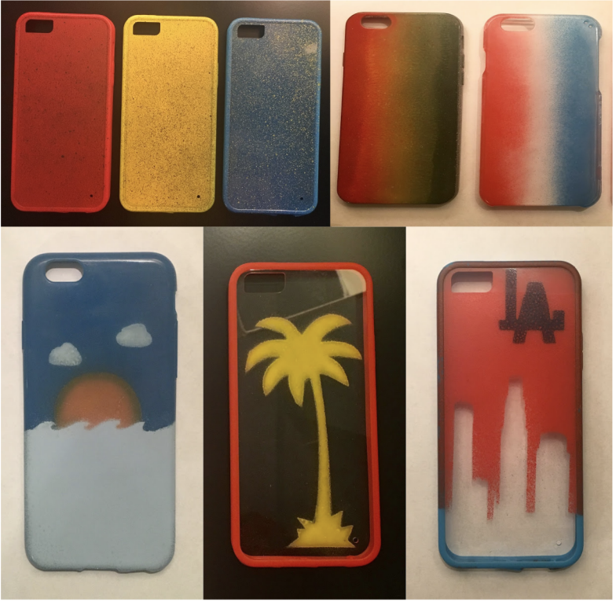
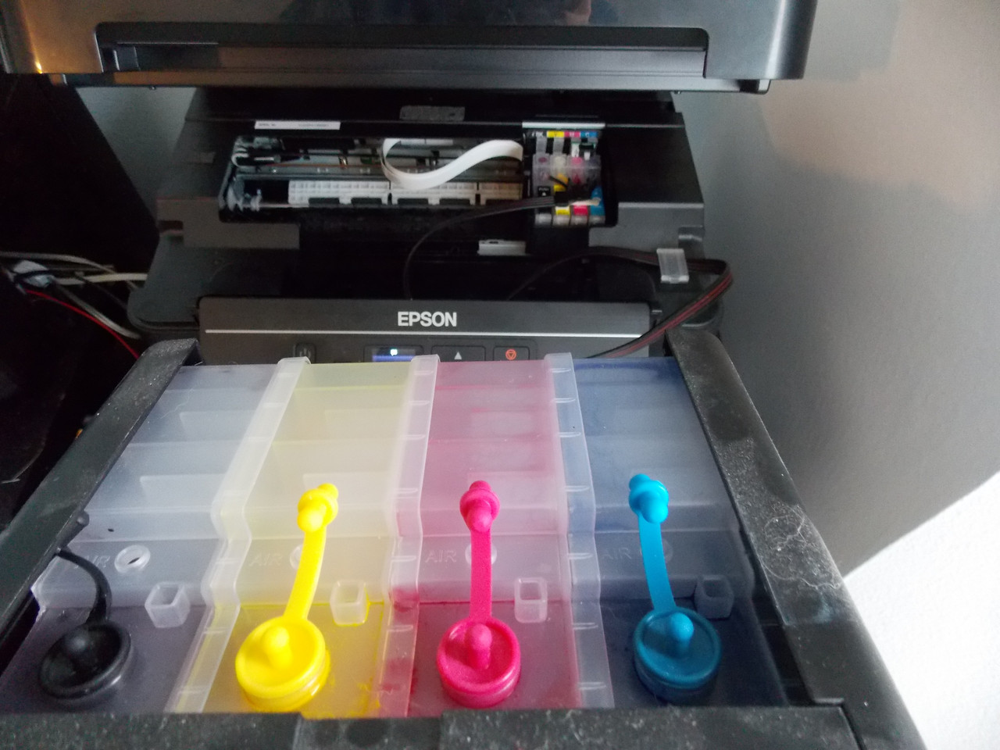
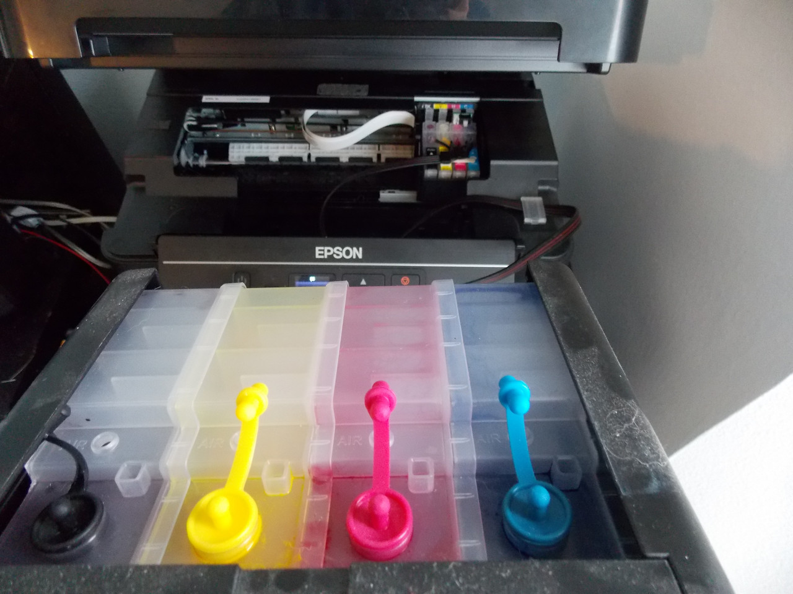

Case Revolution
Project Overview
This phone case business was quite an experience for me, both manufacturing-wise and business-wise. Started as when I was a junior in high school and prolonging until I was graduated from high school, the Case Revolution company idea taught me how to independently run an entire company with just myself. I wanted to start a business that incorporated me learning more about manufacturing products as well as using key business knowledge, so making phone cases was the perfect idea.

The company was initially just me going through three separate product ideas: the first two failing before the final one served me well. It also started with me going about $400 in debt to buy all of the materials before profiting over $3,000 in about 9 months.
Iteration 1: Laser Cut Paint Stencils
Because my school had a machine shop that I could easily access as a student, I thought of making laser-cut stencils through sketches I made with Autodesk Inventor. Using wholesale cases purchased from Downtown LA, I spraypainted my designs on the laser-cut stencils and coated the designs with a protective gloss.
The problem with this product idea was that the spray-paint was really susceptible to chipping, and after testing case design's stability, it took very little - even with the protective gloss - to cause the paint to chip off. It was at that point when I rethought my approach to my product development plan.
Iteration 2: Printable Water Transfer Paper
After doing some research online, I came across a YouTube video that used temporary tattoo's as a means of placing a design on a surface. Right then, I thought of ordering printable temporary tattoo paper to use as a way to get my case designs on the cases. The process was very straightforward: I printed out correctly-sized designs on the paper, applied an adhesive to the paper, and used water to add them to the case - along with a protective gloss coating. The cases themselves had to be painted white so as to allow the partly-transparent tattoo film to shine through, but this design worked really well and allowed me to have pictures this time (as opposed to only being able to fit all of my ideas into laser-cut stencils).

The durability of the tattoo paper method was a lot better than the spraypaint stencils, but it still was not perfect. After using the case below as a test case for 2 weeks, the overall quality held up, but it was noticable that the sides of the case began to chip, and I realized that nobody would end up purchasing this for such low-end quality. It was again back to the drawing board.
Iteration 3: Heat Press with Sublimation Printing
 

I ended up figuring out about heat pressing and sublimation printing at an arts & photography fair that I went to with my Mom, who is an artist. While walking through, I saw really well-designed cases by photographers and asked them how they made them, and they said they used sublimation printing to heat press their designs onto cases. If you do not know what sublimation printing is, it essentially can evaporate onto another surface when a high amount of heat is applied.
With a rough idea of where I wanted to go and much online researching, I coughed up enough of my own money to buy a sublimation printer, heat press, blank plastic cases, and kapton tape (heat-resistance tape that secured the paper to the case template).
With a few test runs of the cases, I began to start figuring out a way to sell my products. I first started to go to swap meets and craft fairs, but I usually just ended up paying off the entry fee. Clearly, this was not a sustainable way to sell my products, so I ended up making an Etsy page and an account on the Mercari app.
With the success that I round myself having with the phone cases, my brother jokingly suggested that I should begin to make T-Shirts with heat-transfer paper, so I threw up some meme designs at the time and found orders to begin to come pouring through. One design in particular ended up being my bestseller: the meme where the entire Bee Movie script was printed in a miniscule font on the front.
Business Strategy
A business book I was really obsessed with at the time was The Lean Startup by Eric Ries, where I learned a lot about getting ideas out there and quickly getting consumer feedback to tweak my product as the consumers liked. With this, I figured out how to Photoshop case designs that I had never made before just to see how many clicks or purchases it got. I also used these analytics to determine how many cases of each iPhone to order and keep in stock - I didn't bother with Android because the typical iPhone user cares much more about phone case aesthetic. I quickly centered my case themes to center around. Being around a meme-sharing culture, I knew which memes were popular and could easily put it up on a template to see how much interest it received.